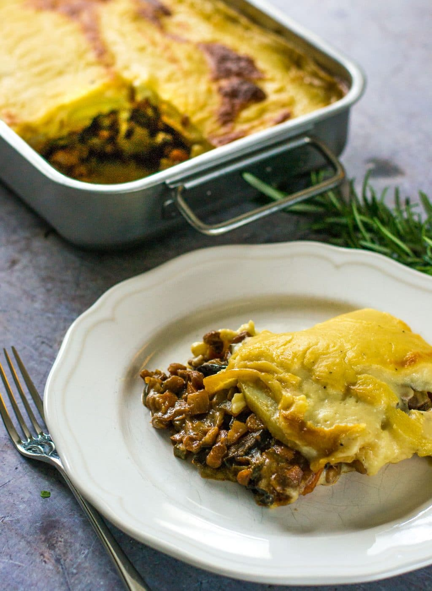

Must have Mousakka

Ingredients
For the aubergine layers:
- 2 aubergines
- 2 tbsp olive oil
For the lentil layers:
- 1 onion
- 1 courgette
- 1 carrot
- 2 tbsp olive oil
- 1 tsp garlic purée / ready-chopped garlic
- ½ tsp cinnamon
- 1 tsp dried oregano
- 2 tbsp tomato purée
- 400 g tinned lentils (green or brown - drained and rinsed)
- 150 ml red wine (check it is vegan)
- 150 ml water
- ½ tsp vegetable stock powder (check it is vegan)
For the potato & béchamel layer:
- 2 large potatoes
- 60 g dairy-free block margarine
- 60 g plain flour
- 500 ml dairy-free milk unsweetened
- 50 g dairy-free cheese
- grated nutmeg (to taste)
Process
- Preheat the oven to 180ºC (fan) / 350ºF / Gas Mark 4. Slice the aubergines into rounds about ½cm thick. Brush with oil on both sides, season with salt and black pepper and lay on baking trays. Roast for 25 minutes or so, turning half way through cooking, until golden brown all over and soft.
- Meanwhile, finely chop the onion, carrot and courgette. Heat the olive oil in a large lidded casserole or frying pan, and gently cook the onion and carrot for 4-5 minutes until starting to soften, then add the courgette and garlic and continue to cook for a further 4-5 minutes.
- Add the cinnamon, oregano and tomato purée to the pan, stir well, then add the lentils and red wine. Turn up the heat to bring to the boil, then reduce to a simmer. After 2-3 minutes, add the water and stock powder then cover and cook gently for 20-25 minutes until the lentils are soft. If the mixture becomes too dry before the end of cooking, add a little more water, and if there is too much liquid left over just remove the lid for a further few minutes of cooking. Taste and add salt and pepper as required.
- Whilst the lentil mixture is cooking, bring a saucepan of water to the boil. Peel and thickly slice the potatoes, then add these to the pan and cook for 5 minutes until almost cooked through but not falling apart. Drain and set aside in a bowl.
- Melt the margarine in the same saucepan, and add the flour. Cook gently, stirring constantly for 2-3 minutes, then add the milk a little at a time until you have a thick and glossy sauce. Remove from the heat and stir through the grated cheese and nutmeg. Taste and add salt and pepper if required.
- To layer up the moussaka, see the video above: Place half the aubergine slices in the bottom of an ovenproof dish, followed by half the lentil mixture. Top with the remaining aubergine slices, then the remaining lentil mixture, then the potato slices, and finally pour over the béchamel sauce.
- Bake in the oven for 35-40 minutes until the top is turning golden brown. Serve immediately with crusty bread and a crisp green salad.